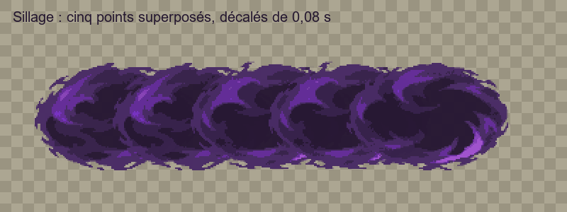
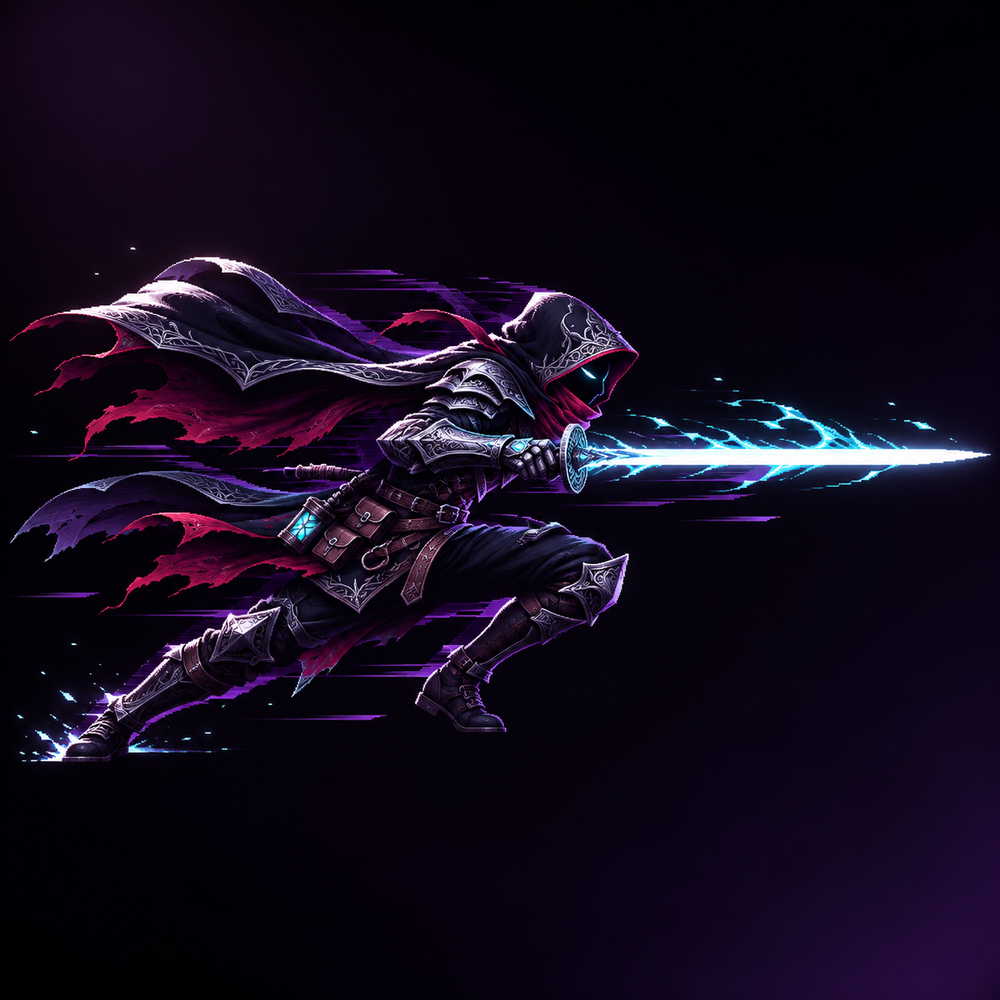
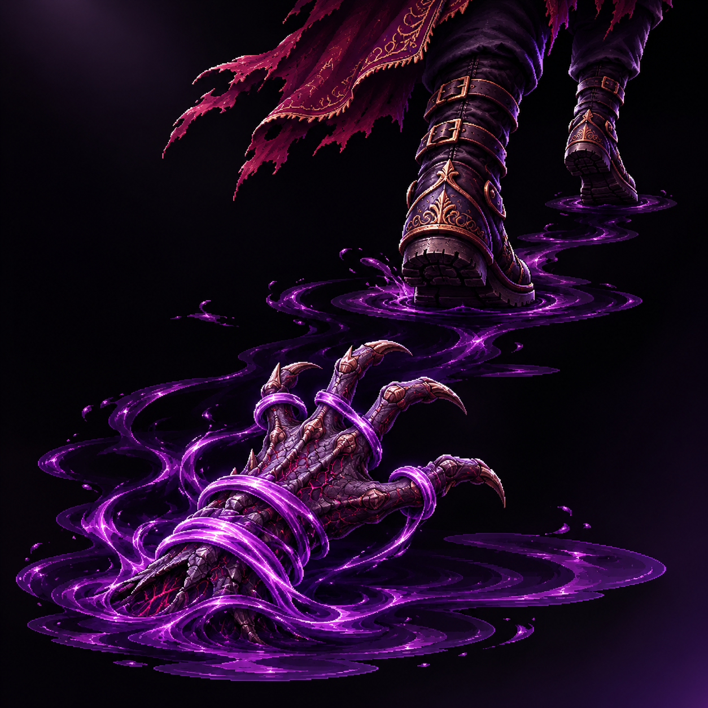
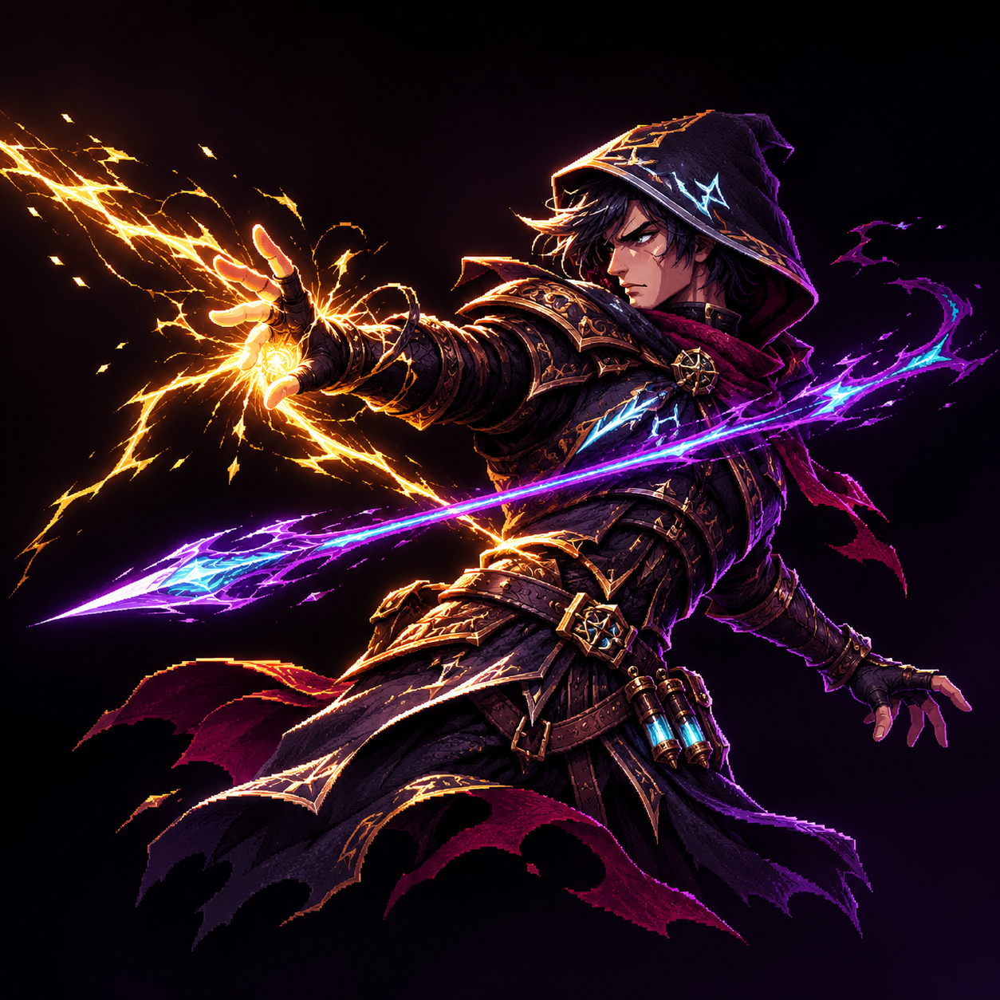
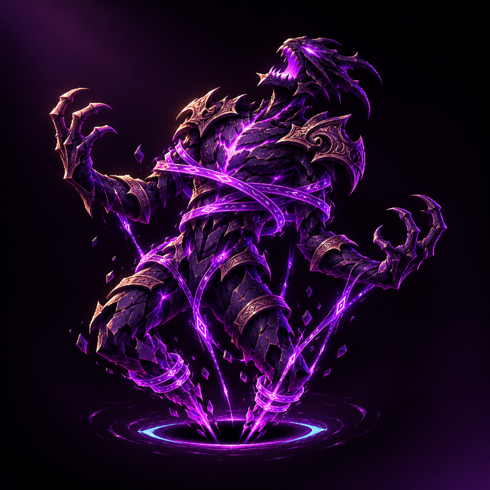
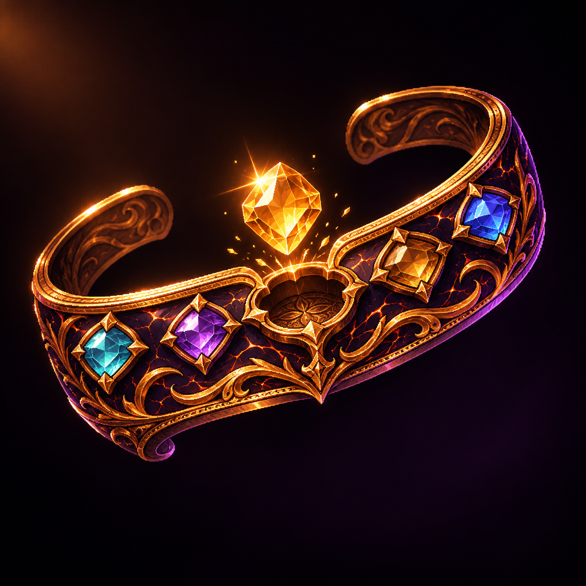

Ruée tranchante
6 images · 24 fps · 0.25 s · 1.4 m
Planche de contrôle · Aperçu animéLot graphique V2 · Contrôle hors moteur · Aucun gameplay modifié
Les effets sont montrés à leur cadence réelle, avec une pause de lecture entre les effets ponctuels. Le sillage boucle deux fois avant sa suppression en jeu. Chargement et rendu OpenGL vérifiés le 17 novembre ; captures dans ../couverture-vfx/rendu/. Essai en partie à confirmer.
6 images · 24 fps · 0.25 s · 1.4 m
Planche de contrôle · Aperçu animé8 images · 8 fps · boucle de 1 s, présence 2 s · 1.8 m
Planche de contrôle · Aperçu animé10 images · 22 fps · 0.455 s · 2.2 m
Planche de contrôle · Aperçu animé




